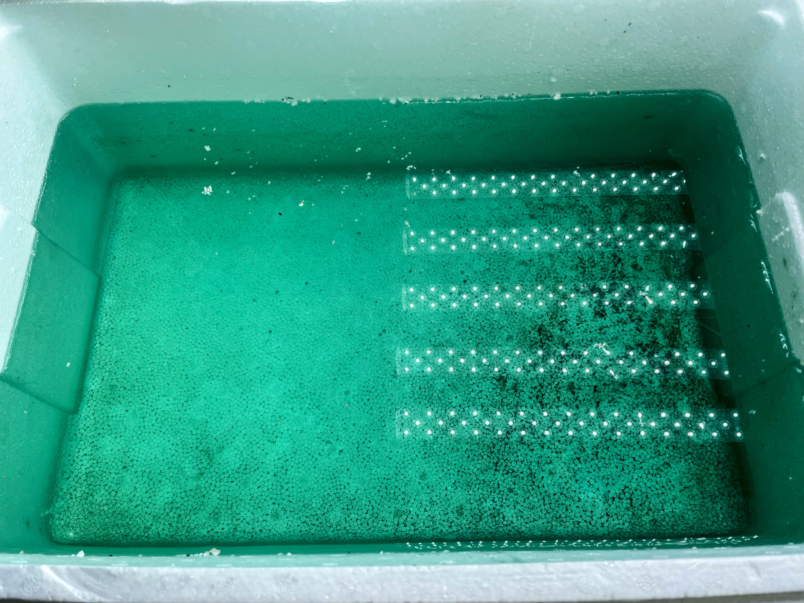
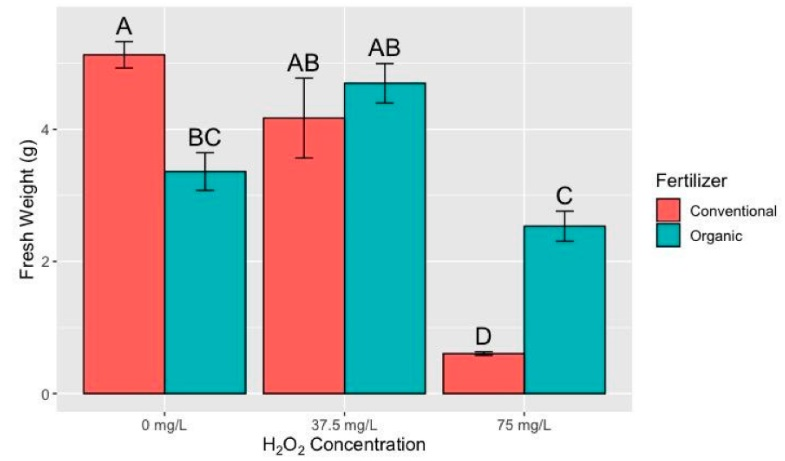

Making Water
Plundered from
- Growing Direct-Seeded Watercress by Two Non-circulating Hydroponic Methods
- 농진청 수경재배 가이드라인, 잎들깨 수경재배 가이드라인
- A Guide to Home Hydroponics for Leafy Greens, Hydroponic Lettuce Handbook: Cornell CEA
Water for hydroponics
It is best to use tap water for the initial water source, as it has a proper amount of mineral and is cheap. RO or purified water is only for special occasions or when the tap water contains excessive minerals.
Tap water is usually 0.2~0.3 EC. This is the baseline EC.
Nutrient Water Recipe (for leafy greens)
EC 1.5~1.7 is appropriate. The water should be changed when the EC drops under 1.2 or the water is near empty. A new formula is not recommended unless you are an expert. The most popular fertilizer for home use is a 3-component formula:
- MasterBlend Tomato and Vegetable: main fertilizer
- Epsom Salt (Magnesium Sulfate): secondary fertilizer, providing Mg and S
- Calcium Nitrate: main fertilizer, providing Ca and N
The standard mixing ratio (Masterblend:Epsom Salt:Calcium Nitrate) is 1:0.5:1, but 1:0.6:1 is recommended for leafy greens. For my case, I use 1.5g:1.0g:1.5g per 1L, which results in 1.7 EC nutrient water.
pH

I'm using Masterblend lettuce similar to Chem-Gro lettuce, and completely fits to that guide. I'm sure this applies to any hydroponics blends.
Do not mind pH for preparing the tank water. Initial pH always goes to <6.6 range with a proper fertilizer blending.

There's no consistent result that initial pH out of the appropriate pH 6.0 plus or minus is good for yield or growth.
You can use phosporous acid, sulfuric acid, nitric acid, for NaOH for adjusting pH if the water is out of the appropriate range. I have concentrated acids but didn't used yet.
There're contradictory results for using H2O2. This can be used as a sanitizer and DO generator. While clearly increases DO for a time, some articles suggest that it's detrimental to a root without reducing algae.

In a fact, DO cannot be remain higher than a nominal value of the water unless a temperature goes down. You don't have to do any explict water treatments (sanitization for tap water, H2O2, aeration) without a observed status, or value. If such had worked, it would have been in the guidelines, but it wasn't.